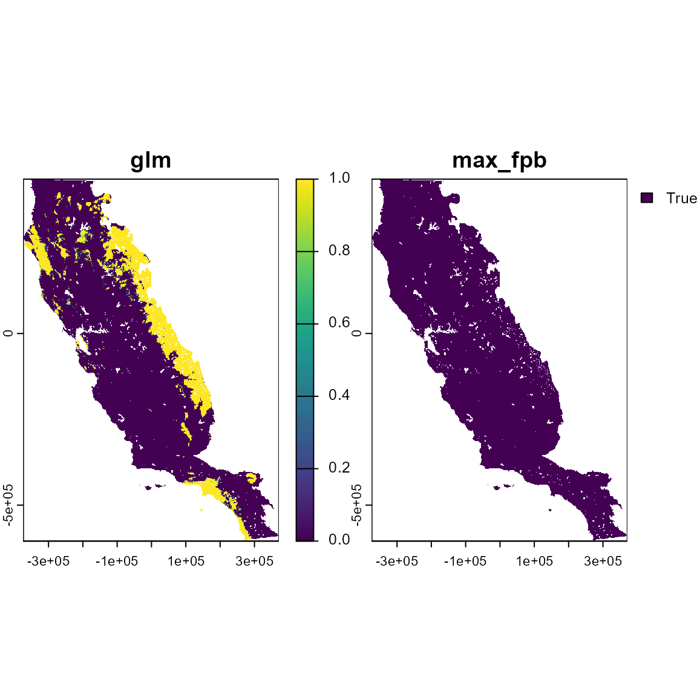
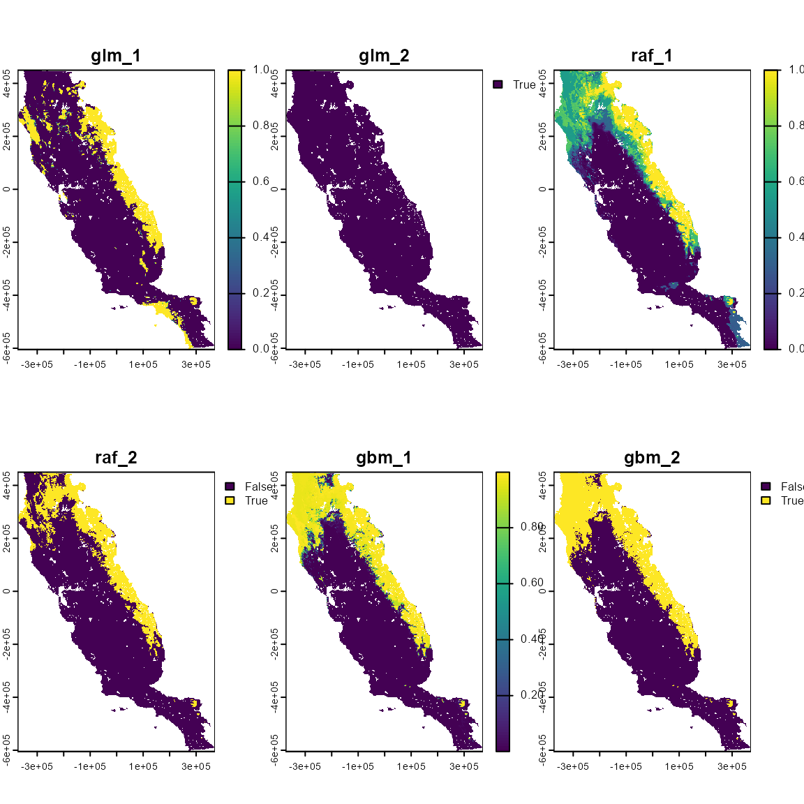
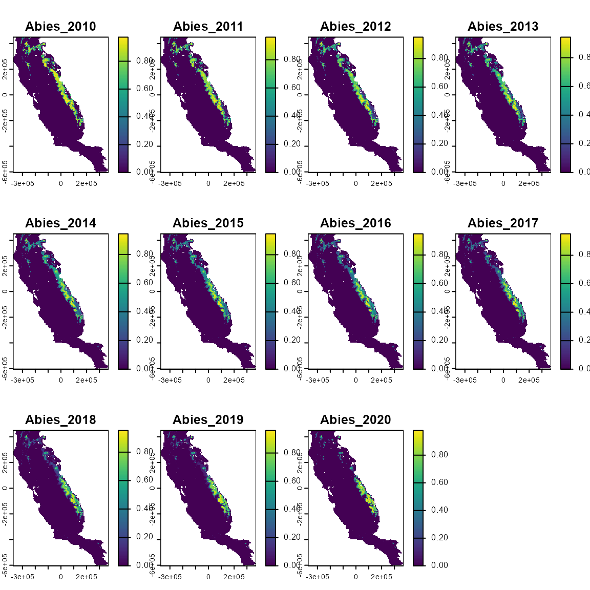
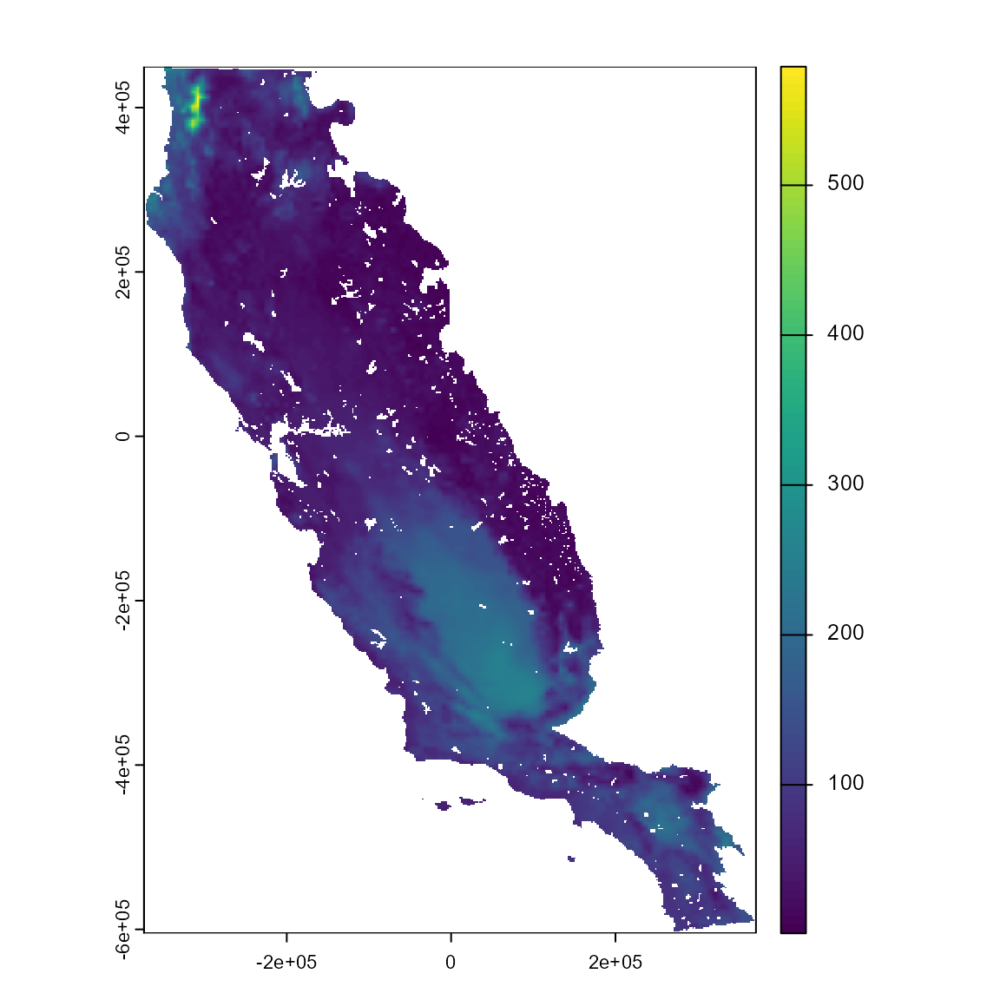
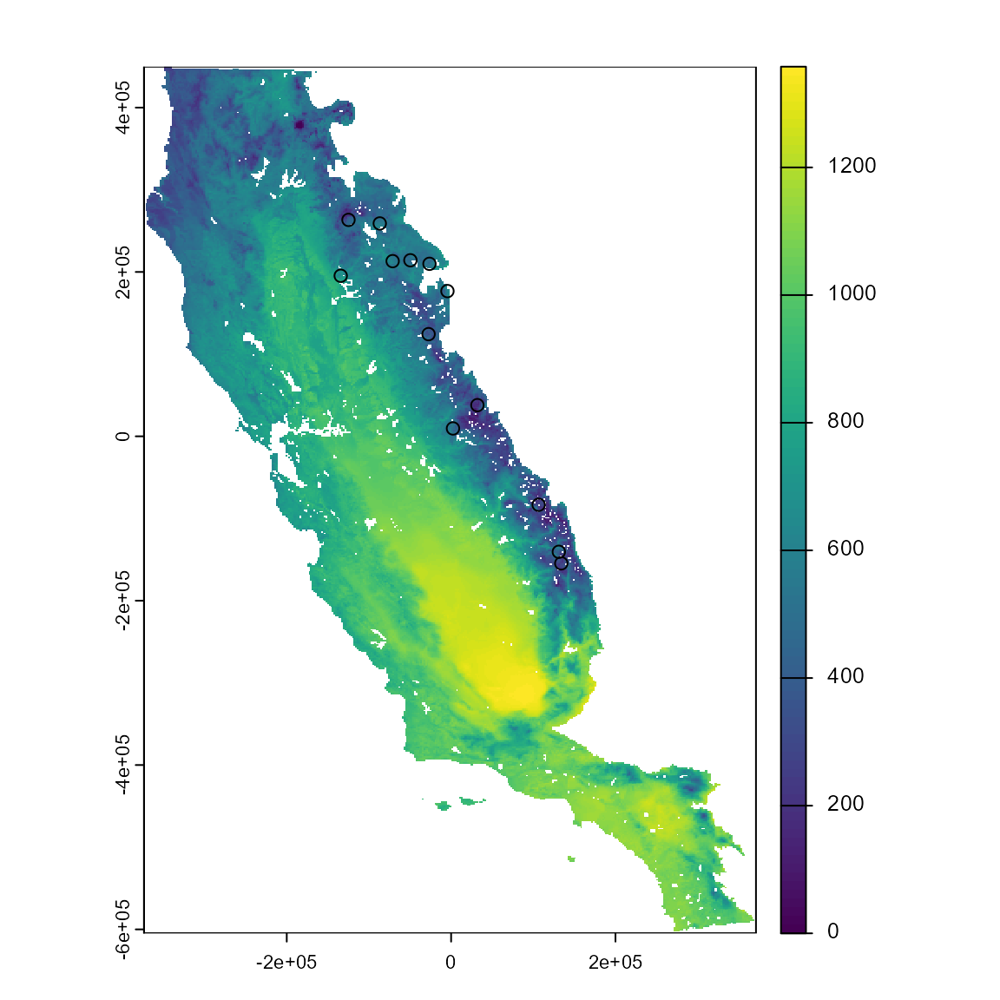
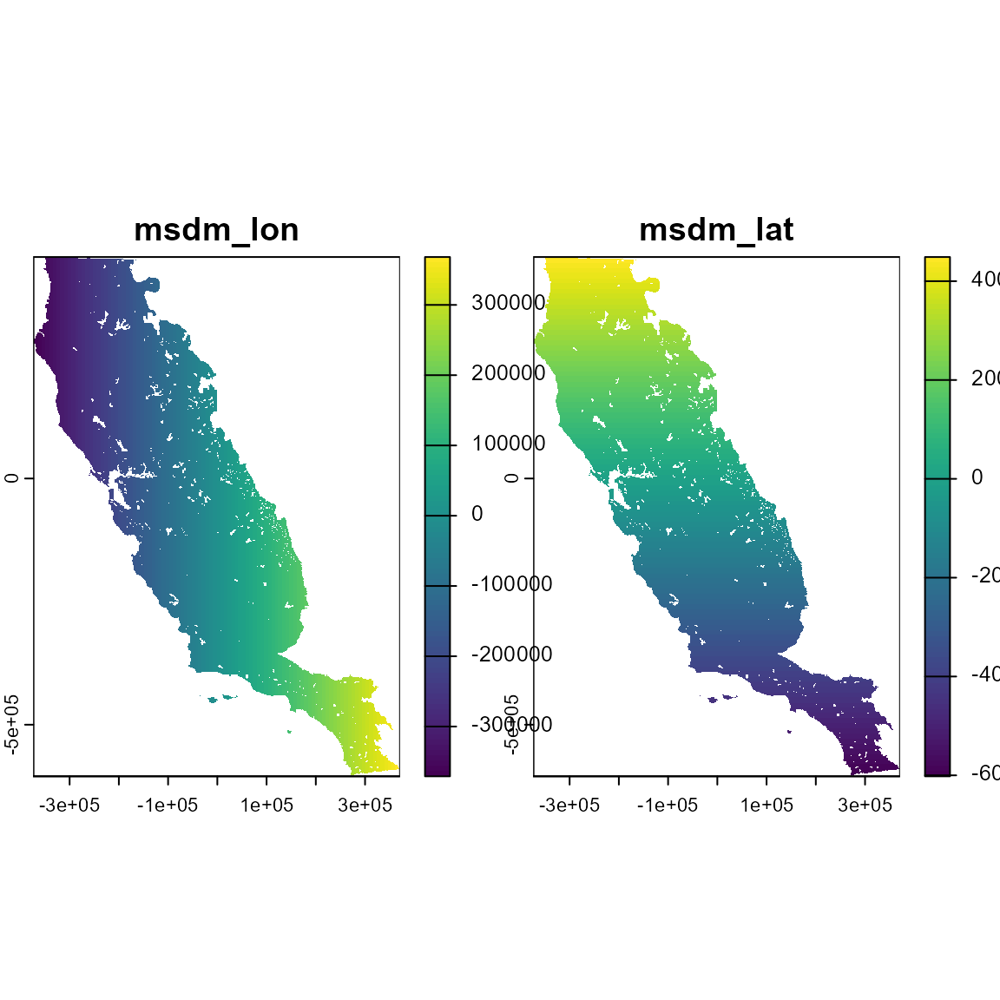
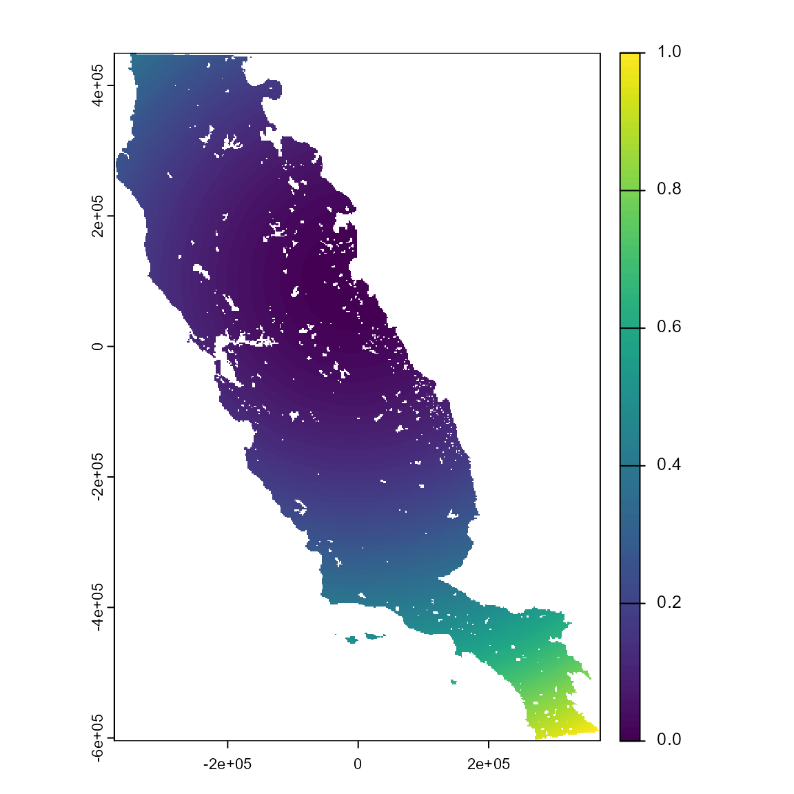
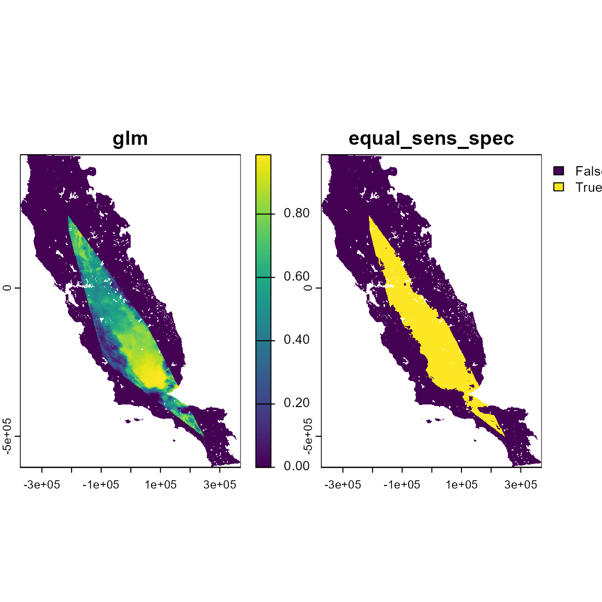

flexsdm: Overview of Post-modeling functions
Source:vignettes/v03_post_modeling.Rmd
v03_post_modeling.RmdIntroduction
Species distribution modeling (SDM) has become a standard tool in multiple research areas, including ecology, conservation biology, biogeography, paleobiogeography, and epidemiology. SDM is an area of active theoretical and methodological research The flexsdm package provides users the ability to manipulate and parameterize models in a variety of ways that meet their unique research needs.
This flexibility enables users to define their own complete or partial modeling procedure specific for their modeling situations (e.g., number of variables, number of records, different algorithms and ensemble methods, algorithms tuning, etc.).
In this vignette, users will learn about the post-modeling set of functions in the flexsdm package. These functions were designed with the aim of assisting the flexsdm user in predicting, evaluating, and correcting SDMs.
These are the functions created for model prediction, evaluation and correction:
Post-modeling functions
sdm_predict() Spatial predictions from individual and ensemble models
sdm_summarize() Merge model performance tables
interp() Raster interpolation between SDM predictions to two time periods
extra_eval() Measure model extrapolation
extra_correct() Constraint suitability values under a given extrapolation value
msdm_priori() Create spatial predictor variables to reduce overprediction from species distribution models
msdm_posteriori() Methods to correct overprediction of species distribution models based on occurrences and suitability patterns
Installation
Install the flexsdm package. You can install the released version of flexsdm from github with:
# devtools::install_github('sjevelazco/flexsdm')
library(flexsdm)
library(dplyr)
#>
#> Attaching package: 'dplyr'
#> The following objects are masked from 'package:stats':
#>
#> filter, lag
#> The following objects are masked from 'package:base':
#>
#> intersect, setdiff, setequal, union
library(terra)
#> terra 1.7.83
#>
#> Attaching package: 'terra'
#> The following object is masked from 'package:knitr':
#>
#> spinProject directory setup
Decide where on your computer you would like to store the inputs and outputs of your project (this will be your main directory). Use an existing one or use dir.create() to create your main directory. Then specify whether or not to include folders for projections, calibration areas, algorithms, ensembles, and thresholds. For more details see Vignette 01_pre_modeling
Species occurrence, presence/absense and environmental data
In this tutorial, we will be using the “spp” example dataset which includes pr_ab (presence = 1, and absence = 0), location (x, y) data for 3 plant species found in California and a raster with environmental data. You can load these data into your local R environment by using the code below:
data("spp")
somevar <- system.file("external/somevar.tif", package = "flexsdm")
somevar <- terra::rast(somevar)If you want to replace the spp dataset with your own data, make sure that contains coordinates, species presence = 1 / absence = 0 and a raster with environmental data.
First, prepare the occurrences, environmental conditions and partitions
# Select only one species
some_sp <- spp %>%
filter(species == "sp3")
# Extract the environmental condition from the rsater for sp3
some_sp <-
sdm_extract(
data = some_sp,
x = "x",
y = "y",
env_layer = somevar
)
#> 4 rows were excluded from database because NAs were found
# Make a partition defining the method, folds and replicates
some_sp <- part_random(
data = some_sp,
pr_ab = "pr_ab",
method = c(method = "rep_kfold", folds = 3, replicates = 5)
)Next, fit different models
# Fit and validate a [generalized linear model](https://sjevelazco.github.io/flexsdm/reference/fit_glm.html)
mglm <- fit_glm(
data = some_sp,
response = "pr_ab",
predictors = c("CFP_1", "CFP_2", "CFP_3", "CFP_4"),
partition = ".part",
poly = 2
)
#> Formula used for model fitting:
#> pr_ab ~ CFP_1 + CFP_2 + CFP_3 + CFP_4 + I(CFP_1^2) + I(CFP_2^2) + I(CFP_3^2) + I(CFP_4^2)
#> Replica number: 1/5
#> Partition number: 1/3
#> Partition number: 2/3
#> Partition number: 3/3
#> Replica number: 2/5
#> Partition number: 1/3
#> Partition number: 2/3
#> Partition number: 3/3
#> Replica number: 3/5
#> Partition number: 1/3
#> Partition number: 2/3
#> Partition number: 3/3
#> Replica number: 4/5
#> Partition number: 1/3
#> Partition number: 2/3
#> Partition number: 3/3
#> Replica number: 5/5
#> Partition number: 1/3
#> Partition number: 2/3
#> Partition number: 3/3
# Fit and validate a [random forest model](https://sjevelazco.github.io/flexsdm/reference/fit_raf.html)
mraf <- fit_raf(
data = some_sp,
response = "pr_ab",
predictors = c("CFP_1", "CFP_2", "CFP_3", "CFP_4"),
partition = ".part",
)
#> Formula used for model fitting:
#> pr_ab ~ CFP_1 + CFP_2 + CFP_3 + CFP_4
#> Replica number: 1/5
#> Partition number: 1/3
#> Partition number: 2/3
#> Partition number: 3/3
#> Replica number: 2/5
#> Partition number: 1/3
#> Partition number: 2/3
#> Partition number: 3/3
#> Replica number: 3/5
#> Partition number: 1/3
#> Partition number: 2/3
#> Partition number: 3/3
#> Replica number: 4/5
#> Partition number: 1/3
#> Partition number: 2/3
#> Partition number: 3/3
#> Replica number: 5/5
#> Partition number: 1/3
#> Partition number: 2/3
#> Partition number: 3/3
# Fit and validate a [general boosted regression model](https://sjevelazco.github.io/flexsdm/reference/fit_gbm.html)
mgbm <- fit_gbm(
data = some_sp,
response = "pr_ab",
predictors = c("CFP_1", "CFP_2", "CFP_3", "CFP_4"),
partition = ".part"
)
#> Formula used for model fitting:
#> pr_ab ~ CFP_1 + CFP_2 + CFP_3 + CFP_4
#> Replica number: 1/5
#> Partition number: 1/3
#> Partition number: 2/3
#> Partition number: 3/3
#> Replica number: 2/5
#> Partition number: 1/3
#> Partition number: 2/3
#> Partition number: 3/3
#> Replica number: 3/5
#> Partition number: 1/3
#> Partition number: 2/3
#> Partition number: 3/3
#> Replica number: 4/5
#> Partition number: 1/3
#> Partition number: 2/3
#> Partition number: 3/3
#> Replica number: 5/5
#> Partition number: 1/3
#> Partition number: 2/3
#> Partition number: 3/31. Fit and ensemble the models above
# Fit and ensemble the models. To choose the arguments that best fit your own data, see all options available in [fit_ensemble](https://sjevelazco.github.io/flexsdm/reference/fit_ensemble.html)
mensemble <- fit_ensemble(
models = list(mglm, mraf, mgbm),
ens_method = "meansup",
thr = NULL,
thr_model = "max_sens_spec",
metric = "TSS"
)
#> | | | 0% | |======================================================================| 100%You can also fit a model using an Ensembles of Small Models approach. In this example, we fit without threshold specification and with k-fold cross-validation.
msmall <- esm_gam(
data = some_sp,
response = "pr_ab",
predictors = c("CFP_1", "CFP_2", "CFP_3", "CFP_4"),
partition = ".part",
thr = NULL
)
#> | | | 0% | |============ | 17% | |======================= | 33% | |=================================== | 50% | |=============================================== | 67% | |========================================================== | 83% | |======================================================================| 100%Finally, we can predict different kinds of models from the same data (some_sp). sdm_predict can be used for predicting one or more models fitted with fit_ or tune_ functions. The output will be a list of SpatRaster with continuous and/or binary predictions.
# Predict using a single model, which is an mglm model in this example,
# and a threshold type for binary predictions
ind_p <- sdm_predict(
models = mglm,
pred = somevar,
thr = "max_fpb",
con_thr = FALSE,
predict_area = NULL
)
#> Predicting individual models
# Inspect the object. It's a SpatRaster with 2 layers: glm, max_fpb
# These are the continuous and binary prediction from the model
ind_p
#> $glm
#> class : SpatRaster
#> dimensions : 558, 394, 2 (nrow, ncol, nlyr)
#> resolution : 1890, 1890 (x, y)
#> extent : -373685.8, 370974.2, -604813.3, 449806.7 (xmin, xmax, ymin, ymax)
#> coord. ref. : +proj=aea +lat_0=0 +lon_0=-120 +lat_1=34 +lat_2=40.5 +x_0=0 +y_0=-4000000 +datum=NAD83 +units=m +no_defs
#> source(s) : memory
#> varnames : somevar
#> somevar
#> names : glm, max_fpb
#> min values : 2.220446e-16, TRUE
#> max values : 1.000000e+00, TRUE
# Plot to see this layers
ind_p_rst <- terra::rast(ind_p)
plot(ind_p_rst)
# Predict a list of more than one model, specifying a threshold type
list_p <- sdm_predict(
models = list(mglm, mraf, mgbm),
pred = somevar,
thr = "max_fpb",
con_thr = FALSE,
predict_area = NULL
)
#> Predicting list of individual models
# Inspect the object. It's a list with 3 SpatRaster, one for each model,
# each of which contains 2 layers, for the continuous and thresholded binary predictions.
list_p
#> $glm
#> class : SpatRaster
#> dimensions : 558, 394, 2 (nrow, ncol, nlyr)
#> resolution : 1890, 1890 (x, y)
#> extent : -373685.8, 370974.2, -604813.3, 449806.7 (xmin, xmax, ymin, ymax)
#> coord. ref. : +proj=aea +lat_0=0 +lon_0=-120 +lat_1=34 +lat_2=40.5 +x_0=0 +y_0=-4000000 +datum=NAD83 +units=m +no_defs
#> source(s) : memory
#> varnames : somevar
#> somevar
#> names : glm, max_fpb
#> min values : 2.220446e-16, TRUE
#> max values : 1.000000e+00, TRUE
#>
#> $raf
#> class : SpatRaster
#> dimensions : 558, 394, 2 (nrow, ncol, nlyr)
#> resolution : 1890, 1890 (x, y)
#> extent : -373685.8, 370974.2, -604813.3, 449806.7 (xmin, xmax, ymin, ymax)
#> coord. ref. : +proj=aea +lat_0=0 +lon_0=-120 +lat_1=34 +lat_2=40.5 +x_0=0 +y_0=-4000000 +datum=NAD83 +units=m +no_defs
#> source(s) : memory
#> varnames : somevar
#> somevar
#> names : raf, max_fpb
#> min values : 0, FALSE
#> max values : 1, TRUE
#>
#> $gbm
#> class : SpatRaster
#> dimensions : 558, 394, 2 (nrow, ncol, nlyr)
#> resolution : 1890, 1890 (x, y)
#> extent : -373685.8, 370974.2, -604813.3, 449806.7 (xmin, xmax, ymin, ymax)
#> coord. ref. : +proj=aea +lat_0=0 +lon_0=-120 +lat_1=34 +lat_2=40.5 +x_0=0 +y_0=-4000000 +datum=NAD83 +units=m +no_defs
#> source(s) : memory
#> varnames : somevar
#> somevar
#> names : gbm, max_fpb
#> min values : 0.0002949323, FALSE
#> max values : 0.9986537352, TRUE
# Plot to see this layers
list_p_rst <- terra::rast(list_p)
plot(list_p_rst)
# Predict an ensemble model. This is only possible using one fit_ensemble object. It's not possible to include e.g., list(fit_ensemble1, fit_ensemble2) in the model argument.
ensemble_p <- sdm_predict(
models = mensemble,
pred = somevar,
thr = "max_fpb",
con_thr = FALSE,
predict_area = NULL
)
#> Predicting ensembles
# Inspect the object. It's a SpatRaster with 2 layers, mensemble and max_fpb
# These are the continuous and binary prediction from the ensemble model
ensemble_p
#> $meansup
#> class : SpatRaster
#> dimensions : 558, 394, 2 (nrow, ncol, nlyr)
#> resolution : 1890, 1890 (x, y)
#> extent : -373685.8, 370974.2, -604813.3, 449806.7 (xmin, xmax, ymin, ymax)
#> coord. ref. : +proj=aea +lat_0=0 +lon_0=-120 +lat_1=34 +lat_2=40.5 +x_0=0 +y_0=-4000000 +datum=NAD83 +units=m +no_defs
#> source(s) : memory
#> varnames : somevar
#> somevar
#> names : meansup, max_fpb
#> min values : 0, FALSE
#> max values : 1, TRUE
# Plot to see this layers
ensemble_p_rst <- terra::rast(ensemble_p)
plot(ensemble_p_rst)
# Predict an ensembles of small models.
small_p <- sdm_predict(
models = msmall,
pred = somevar,
thr = "max_fpb",
con_thr = FALSE,
predict_area = NULL
)
#> Predicting ensemble of small models
# Inspect the object It's a SpatRaster with 2 layers, msmall and max_fpb
# These are the continuous and binary prediction from the ESM model
small_p
#> $esm_gam
#> class : SpatRaster
#> dimensions : 558, 394, 2 (nrow, ncol, nlyr)
#> resolution : 1890, 1890 (x, y)
#> extent : -373685.8, 370974.2, -604813.3, 449806.7 (xmin, xmax, ymin, ymax)
#> coord. ref. : +proj=aea +lat_0=0 +lon_0=-120 +lat_1=34 +lat_2=40.5 +x_0=0 +y_0=-4000000 +datum=NAD83 +units=m +no_defs
#> source(s) : memory
#> names : esm_gam, max_fpb
#> min values : 2.476531e-05, FALSE
#> max values : 1.000000e+00, TRUE
# Plot to see this layers
small_p_rst <- terra::rast(small_p)
plot(small_p_rst)2. Merge model performance tables
This function combines model performance tables for all input models. This function requires a list of one or more models fitted with fit_ or tune_ functions, a fit_ensemble output, or a esm_ family function output.
# Load abies data
data(abies)
abies
#> # A tibble: 1,400 × 13
#> id pr_ab x y aet cwd tmin ppt_djf ppt_jja pH awc
#> <int> <dbl> <dbl> <dbl> <dbl> <dbl> <dbl> <dbl> <dbl> <dbl> <dbl>
#> 1 715 0 -95417. 314240. 323. 546. 1.24 62.7 17.8 5.77 0.108
#> 2 5680 0 98987. -159415. 448. 815. 9.43 130. 6.43 5.60 0.160
#> 3 7907 0 121474. -99463. 182. 271. -4.95 151. 11.2 0 0
#> 4 1850 0 -39976. -17456. 372. 946. 8.78 116. 2.70 6.41 0.0972
#> 5 1702 0 111372. -91404. 209. 399. -4.03 165. 9.27 0 0
#> 6 10036 0 -255715. 392229. 308. 535. 4.66 166. 16.5 5.70 0.0777
#> 7 12384 0 -311765. 380213. 568. 352. 4.38 480. 41.2 5.80 0.110
#> 8 6513 0 111360. -120229. 327. 633. 4.93 163. 8.91 1.18 0.0116
#> 9 9884 0 -284326. 442136. 377. 446. 3.99 296. 16.8 5.96 0.0900
#> 10 8651 0 137640. -110538. 215. 265. -4.62 180. 9.57 0 0
#> # ℹ 1,390 more rows
#> # ℹ 2 more variables: depth <dbl>, landform <fct>
# We will partition the data with the k-fold method
abies2 <- part_random(
data = abies,
pr_ab = "pr_ab",
method = c(method = "kfold", folds = 5)
)Build some models to use for the performance table merge
# Build a generalized additive model, and a generalized linear model using fit_ family functions
gam_t1 <- fit_gam(
data = abies2,
response = "pr_ab",
predictors = c("aet", "ppt_jja", "pH", "awc", "depth"),
predictors_f = c("landform"),
partition = ".part",
thr = c("max_sens_spec", "equal_sens_spec", "max_sorensen")
)
#> Formula used for model fitting:
#> pr_ab ~ s(aet, k = -1) + s(ppt_jja, k = -1) + s(pH, k = -1) + s(awc, k = -1) + s(depth, k = -1) + landform
#> Replica number: 1/1
#> Partition number: 1/5
#> Partition number: 2/5
#> Partition number: 3/5
#> Partition number: 4/5
#> Partition number: 5/5
glm_t1 <- fit_glm(
data = abies2,
response = "pr_ab",
predictors = c("aet", "ppt_jja", "pH", "awc", "depth"),
predictors_f = c("landform"),
partition = ".part",
thr = c("max_sens_spec", "equal_sens_spec", "max_sorensen"),
poly = 0,
inter_order = 0
)
#> Formula used for model fitting:
#> pr_ab ~ aet + ppt_jja + pH + awc + depth + landform
#> Replica number: 1/1
#> Partition number: 1/5
#> Partition number: 2/5
#> Partition number: 3/5
#> Partition number: 4/5
#> Partition number: 5/5
# Build a tuned model using tune_ family functions
# Prepare the grid object to use in grid argument
tune_grid <-
expand.grid(
mtry = seq(1, 7, 1),
ntree = seq(300, 1500, 200)
)
# Build a tuned random forest model
rf_t1 <-
tune_raf(
data = abies2,
response = "pr_ab",
predictors = c(
"aet", "cwd", "tmin", "ppt_djf",
"ppt_jja", "pH", "awc", "depth"
),
predictors_f = c("landform"),
partition = ".part",
grid = tune_grid,
thr = c("max_sens_spec", "equal_sens_spec", "max_sorensen"),
metric = "TSS",
)
#> Formula used for model fitting:
#> pr_ab ~ aet + cwd + tmin + ppt_djf + ppt_jja + pH + awc + depth + landform
#> Tuning model...
#> Replica number: 1/1
#> Formula used for model fitting:
#> pr_ab ~ aet + cwd + tmin + ppt_djf + ppt_jja + pH + awc + depth + landform
#> Replica number: 1/1
#> Partition number: 1/5
#> Partition number: 2/5
#> Partition number: 3/5
#> Partition number: 4/5
#> Partition number: 5/5
rf_t1$performance
#> # A tibble: 1 × 27
#> mtry ntree model threshold thr_value n_presences n_absences TPR_mean TPR_sd
#> <dbl> <dbl> <chr> <chr> <dbl> <int> <int> <dbl> <dbl>
#> 1 3 300 raf max_sens_s… 0.606 700 700 0.924 0.0356
#> # ℹ 18 more variables: TNR_mean <dbl>, TNR_sd <dbl>, SORENSEN_mean <dbl>,
#> # SORENSEN_sd <dbl>, JACCARD_mean <dbl>, JACCARD_sd <dbl>, FPB_mean <dbl>,
#> # FPB_sd <dbl>, OR_mean <dbl>, OR_sd <dbl>, TSS_mean <dbl>, TSS_sd <dbl>,
#> # AUC_mean <dbl>, AUC_sd <dbl>, BOYCE_mean <dbl>, BOYCE_sd <dbl>,
#> # IMAE_mean <dbl>, IMAE_sd <dbl>
# Note in rf_t1$performance the best model was the one with mtry = 3 and threshold = 'max_sens_spec'Finally, merge the three sdm performance tables.
merge_df <- sdm_summarize(models = list(gam_t1, glm_t1, rf_t1))
merge_df
#> # A tibble: 7 × 28
#> model_ID model threshold thr_value n_presences n_absences TPR_mean TPR_sd
#> <int> <chr> <chr> <dbl> <int> <int> <dbl> <dbl>
#> 1 1 gam equal_sens_sp… 0.540 700 700 0.737 0.0366
#> 2 1 gam max_sens_spec 0.530 700 700 0.751 0.0461
#> 3 1 gam max_sorensen 0.359 700 700 0.864 0.0580
#> 4 2 glm equal_sens_sp… 0.523 700 700 0.663 0.0583
#> 5 2 glm max_sens_spec 0.463 700 700 0.803 0.111
#> 6 2 glm max_sorensen 0.356 700 700 0.876 0.0436
#> 7 3 raf max_sens_spec 0.606 700 700 0.924 0.0356
#> # ℹ 20 more variables: TNR_mean <dbl>, TNR_sd <dbl>, SORENSEN_mean <dbl>,
#> # SORENSEN_sd <dbl>, JACCARD_mean <dbl>, JACCARD_sd <dbl>, FPB_mean <dbl>,
#> # FPB_sd <dbl>, OR_mean <dbl>, OR_sd <dbl>, TSS_mean <dbl>, TSS_sd <dbl>,
#> # AUC_mean <dbl>, AUC_sd <dbl>, BOYCE_mean <dbl>, BOYCE_sd <dbl>,
#> # IMAE_mean <dbl>, IMAE_sd <dbl>, mtry <dbl>, ntree <dbl>3. Raster interpolation between two time periods
This function is useful for calculating projected suitability values between two time periods with simple interpolation using two raster objects with suitability values. This is useful if, for example, a SDM has been projected to a future or past time period (using maps of predictor variables, such as climate variables, for different time periods), and the user requires an estimate of suitability for intermediate time periods. For example this may be needed for input into other types of models for risk analysis.
This function returns a SpatRaster if dir_save is used as NULL. However, if the user specifies dir_save, the function will save the interpolated raster files in a given directory.
library(terra)
library(dplyr)
f <- system.file("external/suit_time_step.tif", package = "flexsdm")
abma <- terra::rast(f)
plot(abma)This function will create an object of interpolated values with n annual layers ranging from the initial to final year. The resolution and dimensions of the result object will remain the same as the initial and final maps. In this example, there are nine annual (2011-2019) interpolated maps generated from the initial (2010) and final (2020) prediction maps. A cell with a starting value of 1 and and ending value of 0 would be changed in increments of (1-0)/((2020-2010)-1), and given interpolated values of 0.9, 0.8, 0.7…0.1
int <- interp(
r1 = abma[[1]], # set the raster of initial year
r2 = abma[[2]], # set the raster of final year
y1 = 2010, # set the numeric initial year
y2 = 2020, # set the numeric final year
rastername = "Abies",
dir_save = NULL
)
# Layers in the abma SpatRaster
names(abma)
#> [1] "current" "future"
# plot(abma)
# Layers in the int SpatRaster
int
#> class : SpatRaster
#> dimensions : 558, 394, 11 (nrow, ncol, nlyr)
#> resolution : 1890, 1890 (x, y)
#> extent : -373685.8, 370974.2, -604813.3, 449806.7 (xmin, xmax, ymin, ymax)
#> coord. ref. : +proj=aea +lat_0=0 +lon_0=-120 +lat_1=34 +lat_2=40.5 +x_0=0 +y_0=-4000000 +datum=NAD83 +units=m +no_defs
#> source(s) : memory
#> varnames : suit_time_step
#> suit_time_step
#> suit_time_step
#> ...
#> names : Abies_2010, Abies_2011, Abies_2012, Abies_2013, Abies_2014, Abies_2015, ...
#> min values : 0.0000000, 0.0000000, 0.0000000, 0.0000000, 0.0000000, 0.0000000, ...
#> max values : 0.9756107, 0.9606077, 0.9504615, 0.9440073, 0.9442941, 0.9463548, ...
plot(int)
4. Measure model extrapolation
This function measures the extent of model extrapolation by comparing data used for modeling calibration and the area for model projection using the approach proposed by Velazco et al., in prep.
library(dplyr)
library(terra)
data(spp)
f <- system.file("external/somevar.tif", package = "flexsdm")
somevar <- terra::rast(f)
# Inspect the unique values for species
spp$species %>% unique()
#> [1] "sp1" "sp2" "sp3"
# Subset spp data into a tibble only with coordinates for sp3 and pr_ab == 1
sp <- spp %>%
dplyr::filter(species == "sp3", pr_ab == 1) %>%
dplyr::select(x, y)
# Define accessible area for sp3 based on a buffer with around each point that is related to dispersal ability or some other ecological criterion
ca <-
calib_area(
sp,
x = "x",
y = "y",
method = c("buffer", width = 30000),
crs = crs(somevar)
)
# Plot the SpatRaster, occurrences and accessible area
plot(somevar$CFP_1)
points(sp)
plot(ca, add = T)The accessible area defines calibration area used to extract the environmental conditions
somevar_ca <- somevar %>%
crop(., ca) %>%
mask(., ca)
# Plot environmental conditions of the calibration area
plot(somevar_ca)
xp <-
extra_eval(
training_data = somevar_ca,
projection_data = somevar,
n_cores = 1,
aggreg_factor = 3
)
# Plot the SpatRaster object with the extrapolation values measured in percentage
plot(xp)
6. Create spatial predictor variables to reduce overprediction of species distribution models
This function creates geographical predictor variables that, together with environmental variables, can be used to construct constrained species distribution models. This function returns a SpatRaster object, which have to be used together with environmental variables to construct species distribution models. The ‘xy’ approach creates a single pair of raster layers that can be used for all species that share the same study region. Otherwise, ‘cml’, ‘min’, and ‘ker’ create a species-specific raster layer.
library(dplyr)
library(terra)
data("spp")
somevar <- system.file("external/somevar.tif", package = "flexsdm")
somevar <- terra::rast(somevar)
# Select the presences of one species (sp3)
occ <- spp %>%
dplyr::filter(species == "sp3", pr_ab == 1)
# Select a raster layer to be used as a basic raster
a_variable <- somevar[[1]]
plot(a_variable)
points(occ %>% dplyr::select(x, y))
Next, use different methods according to your data.
# Use xy method
m_xy <- msdm_priori(
data = occ,
x = "x",
y = "y",
method = "xy",
env_layer = a_variable
)
plot(m_xy)
# Explore the object. This method assumes that spatial structure can partially explain species distribution (Bahn & Mcgill, 2007). Therefore, the result are two raster layers containing the latitude and longitude of pixels, respectively. This method could be used for all species set that share the same study area region.
m_xy
#> class : SpatRaster
#> dimensions : 558, 394, 2 (nrow, ncol, nlyr)
#> resolution : 1890, 1890 (x, y)
#> extent : -373685.8, 370974.2, -604813.3, 449806.7 (xmin, xmax, ymin, ymax)
#> coord. ref. : +proj=aea +lat_0=0 +lon_0=-120 +lat_1=34 +lat_2=40.5 +x_0=0 +y_0=-4000000 +datum=NAD83 +units=m +no_defs
#> source(s) : memory
#> varnames : somevar
#> somevar
#> names : msdm_lon, msdm_lat
#> min values : -370850.8, -601978.3
#> max values : 368139.2, 448861.7
m_cml <- msdm_priori(
data = occ,
x = "x",
y = "y",
method = "cml",
env_layer = a_variable
)
plot(m_cml)
# Explore the object. This method assumes that pixels closer to presences are likely included in species distributions. The results is a raster layer containing the sum of euclidean geographic distances from each pixel to all occurrences of a species.
m_cml
#> class : SpatRaster
#> dimensions : 558, 394, 1 (nrow, ncol, nlyr)
#> resolution : 1890, 1890 (x, y)
#> extent : -373685.8, 370974.2, -604813.3, 449806.7 (xmin, xmax, ymin, ymax)
#> coord. ref. : +proj=aea +lat_0=0 +lon_0=-120 +lat_1=34 +lat_2=40.5 +x_0=0 +y_0=-4000000 +datum=NAD83 +units=m +no_defs
#> source(s) : memory
#> varname : somevar
#> name : msdm_cml
#> min value : 0
#> max value : 17. Methods to correct overprediction of species distribution models based on occurrences and suitability patterns
These methods are designed to reduce overprediction of species distribution models based on an a posteriori method (see Mendes et al 2020), i.e., the combination of the patterns of species occurrences and predicted suitability.
First, prepare the data
library(dplyr)
library(terra)
data("spp")
somevar <- system.file("external/somevar.tif", package = "flexsdm")
somevar <- terra::rast(somevar)
# Prepare data for modeling a species
set.seed(10)
occ <- spp %>%
dplyr::filter(species == "sp2") %>% # filter using only sp2
sdm_extract(
data = ., x = "x", y = "y",
env_layer = somevar, filter_na = TRUE
) %>% # extract variables values from the raster layer
part_random(.,
pr_ab = "pr_ab",
method = c(method = "kfold", folds = 10)
) # add columns with partition
#> 6 rows were excluded from database because NAs were foundNext, we fit and predict a model
m_glm <- fit_glm(
data = occ,
response = "pr_ab",
predictors = names(somevar),
partition = ".part",
thr = "equal_sens_spec",
)
#> Formula used for model fitting:
#> pr_ab ~ CFP_1 + CFP_2 + CFP_3 + CFP_4 + I(CFP_1^2) + I(CFP_2^2) + I(CFP_3^2) + I(CFP_4^2)
#> Replica number: 1/1
#> Partition number: 1/10
#> Partition number: 2/10
#> Partition number: 3/10
#> Partition number: 4/10
#> Partition number: 5/10
#> Partition number: 6/10
#> Partition number: 7/10
#> Partition number: 8/10
#> Partition number: 9/10
#> Partition number: 10/10Next, let’s predict this model and plot it in a map
# Predict this model
m_pred <- sdm_predict(models = m_glm, pred = somevar, thr = NULL, con_thr = FALSE)
#> Predicting individual models
# Predicting individual models
plot(m_pred[[1]])
Finally, perform correction to avoid models overpredictions.
# Using mcp method. The Minimum Convex Polygon (mcp) method excludes from SDMs climate suitable pixels that do not intercept a minimum convex polygon, with interior angles smaller than 180, enclosing all occurrences of a species.
m_mcp <- msdm_posteriori(
records = occ,
x = "x",
y = "y",
pr_ab = "pr_ab",
method = "mcp",
cont_suit = m_pred[[1]],
thr = "equal_sens_spec",
buffer = NULL
)
plot(m_mcp)
# Using bmcp method. The Buffered Minimum Convex Polygon (bmcp) method is similar to the 'mcp' except by the inclusion of a buffer zone surrounding minimum convex polygons.
m_bmcp <- msdm_posteriori(
records = occ,
x = "x",
y = "y",
pr_ab = "pr_ab",
method = "bmcp",
cont_suit = m_pred[[1]],
thr = "equal_sens_spec",
buffer = 30000,
crs = crs(m_pred[[1]])
)
plot(m_bmcp)
# Using obr method. The Occurrences Based Restriction (obr) method assumes that suitable patches intercepting species occurrences are more likely a part of species distributions than suitable patches that do not intercept any occurrence.
m_obr <- msdm_posteriori(
records = occ,
x = "x",
y = "y",
pr_ab = "pr_ab",
method = "obr",
cont_suit = m_pred[[1]],
thr = "equal_sens_spec",
buffer = NULL
)
plot(m_obr)
# Using pres method. The only occurrences based restriction (pres) method only retains those pixels in suitability patches intercepting occurrences.
m_pres <- msdm_posteriori(
records = occ,
x = "x",
y = "y",
pr_ab = "pr_ab",
method = "pres",
cont_suit = m_pred[[1]],
thr = "equal_sens_spec",
buffer = NULL
)
plot(m_pres)
# Using lq method. The Lower Quantile (lq) method works whenever a suitable pixel is within a k patch, i.e., not within this lower quartile, the suitability of the pixel is reduced to zero. This means that 75% of k patches were withdrawn from the model.
m_lq <- msdm_posteriori(
records = occ,
x = "x",
y = "y",
pr_ab = "pr_ab",
method = "lq",
cont_suit = m_pred[[1]],
thr = "equal_sens_spec",
buffer = NULL
)
plot(m_lq)#=========#=========#=========#=========#=========#=========#=========#
Vignette still under construction and changes
#=========#=========#=========#=========#=========#=========#=========#